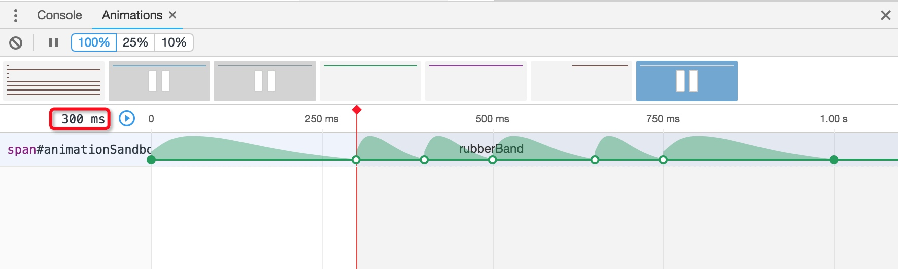

如何使用Chrome DevTools 的动画检查工具
今天介绍一个很有用但是平时也很少用的工具，那就是Chrome 开发者工具中的动画检查功能。
对于业务开发而言，我们平常用的动画一般都比较常见且基础，比如渐隐，滚动，飞入飞出等，大部分情况下可以直接一次性实现，但是对于动画效果要求比较高的项目，为了保证动画的精确性，就需要该工具了。
打开 Animations 选项卡
视图 => 开发者 => 开发者工具 => 更多工具 => Animations
当你第一次打开动画选项卡的时候，并不会看到和动画有关的内容，只会看到一个 Listening for animations... 的提示。如果要想运行这个工具，需要在第一次加载页面时打开选项卡

要让Animations面板捕捉到消息，我们刷新一下再看一下：

左上角的开始结束图标可以控制动画检查工具的打开和关闭
点击开始图标打开该检查工具：

点击播放按钮：

时间轴和关键帧
随着动画的播放，你回看到红色的【时间轴】会在时间轴上移动。可以用鼠标手动控制它的播放，将其放置到某个特定的点
界面上每个条目的每一行代表了页面的单个动画。可以看到每条线都有个颜色更深更饱和的部分，这部分表示的是动画的长度，之后出现的较浅的部分表示重复该动画。
每个动画线上有几个小圆圈，这些小圈与动画的关键帧相对应。实心的圈代表动画的开始和结束，「空心的圈表示内部关键帧的任意位置」
内部关键帧
每行上的插页式关键帧（每个动画周期的开始和结束之间的关键帧）可以拖动到不同的位置，当您移动它们时，您将看到浏览器窗口中的动画更改其时间。这对于试验间隙关键帧的确切百分点来说非常有用。
比较棘手的是，这些实验不会在"样式"选项卡中看到代码的任何更新。相反，当你将插页式关键帧放在正确位置时，你可以手动确定关键帧的百分比值。
将播放头直接放在相关的关键帧上，您将在面板的左上角看到一个时间戳，告诉您动画在几秒钟内的距离。然后，您可以确定此时间占整个动画持续时间的百分比。在下面的示例中，播放头大约是1s动画的300ms，所以我们知道这个关键帧是33%。

动画延迟和持续时间
在“动画”选项卡做的更改会更新“样式”选项卡的代码，以便我们能准确的查看移植到CSS的值。animation-delay是动画开始播放前的延迟，animation-duration是持续时间。
要在播放动画之前调整延迟，请将鼠标悬停在其直线上，直到看到手形光标，然后水平拖动。您将在“ 样式”选项卡中看到更新延迟值：
要修改动画的持续时间，请将鼠标悬停在其最后一个关键帧上，直到看到双端箭头光标，然后水平拖动。同样，将在“ 样式”选项卡中看到该值的更新。
动画计时功能
您还可以使用Chrome的开发工具修改控制动画时序的速度曲线。首先检查应用了动画的元素。在当前指定的计时功能的左侧，您将看到一个带有“波浪形”的小盒子。单击它打开立方贝塞尔编辑器：
将打开一个框，显示一条贝塞尔曲线，说明当前的计时功能。在这里，您可以通过单击左侧的缩略图之一来选择现有预设，也可以将主曲线图像的手柄拖动到左右，以创建自定义的cubic-bezier值，随后可以将其复制到CSS中：
当你走的时候，你会看到一个紫色的小球在编辑器的顶部从左到右动画，让你预览你的计时功能。
可旋转图层可视化
另一个有用的功能是能够可视化动画中使用的图层，包括旋转所述可视化并从各个角度查看它以更好地了解事物的工作方式。
要打开“ 图层”面板，请转到Chrome开发者工具菜单，然后选择更多工具>图层。
总结
让我们快速总结Chrome的动画开发工具：
首先打开Chrome开发工具打开动画工具，然后在开发工具菜单下选择更多工具>动画。
该动画面板需要已被打开时，页面加载捕捉信息上的动画，刷新该页面以实现这一目标。
单击小彩色图缩略图以查看动画信息。
每一行代表一个动画。
填充圆圈表示开始和结束关键帧。
空心圆表示间隙关键帧。
可以移动插页式关键帧，但是您不会在“ 样式”选项卡中看到相关的代码更新，而是手动计算它们所处的百分点。
通过将鼠标悬停在其直线上来修改动画的延迟值，直到看到手形光标，然后水平拖动。
通过将鼠标悬停在最后一个关键帧上来修改动画的持续时间值，直到看到双端箭头光标，然后将其水平拖动。
在样式选项卡中，单击现有计时功能左侧的图标以打开立方贝塞尔编辑器。
在此处选择计时功能预设，或通过修改主曲线图像创建自己的预设功能。
转到Chrome开发者工具菜单，然后选择更多工具>图层，打开“ 图层”面板。
在此面板中，使用“ 旋转”模式从任何角度查看动画图层。